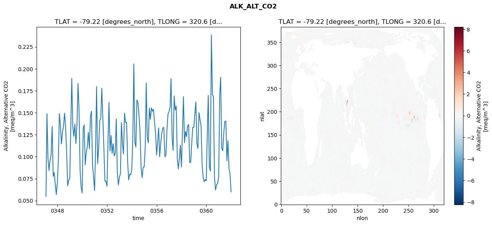
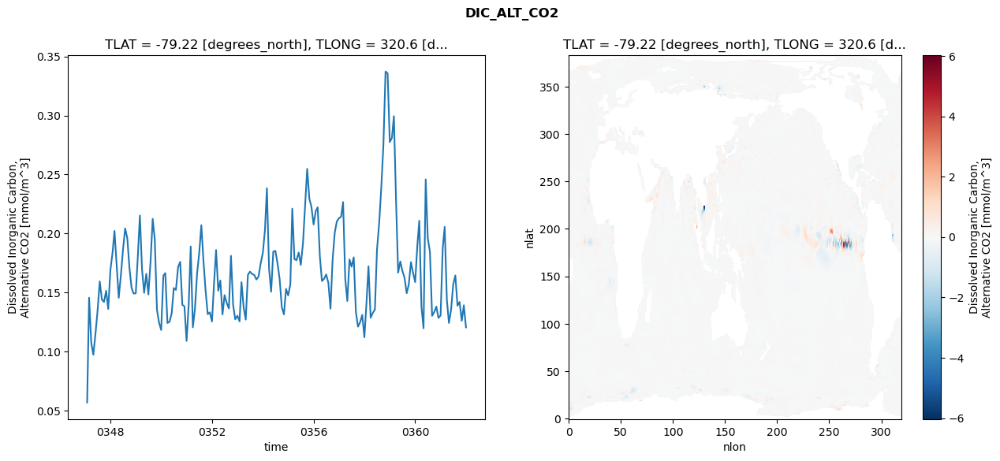
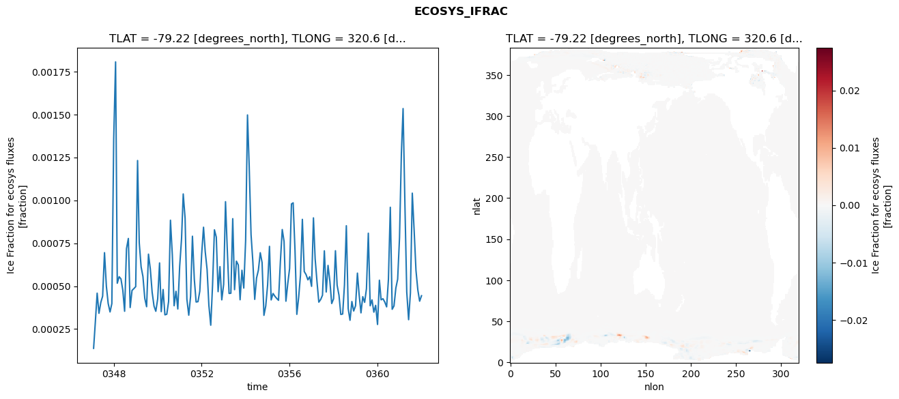
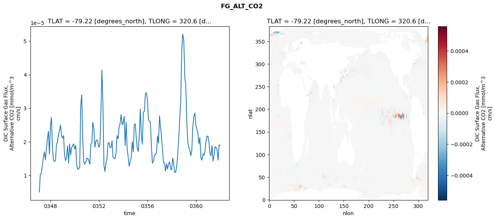

glb-dor_North_Atlantic_basin_011_1999-01-01_00044#
Simulation details#
Case: smyle.cdr-atlas-v0.glb-dor_North_Atlantic_basin_011_1999-01-01_00044.001
Basin: North_Atlantic_basin
Polygon: 11.0
Start date: 1999-01
Show code cell source Hide code cell source
import xarray as xr
import matplotlib.pyplot as plt
Show code cell source Hide code cell source
zarr_store = "/path/to/zarr/store"
# Parameters
zarr_store = "/global/cfs/projectdirs/m4746/Projects/Ocean-CDR-Atlas-v0/data/validation/smyle.cdr-atlas-v0.glb-dor_North_Atlantic_basin_011_1999-01-01_00044.001.validation.zarr"
Show code cell source Hide code cell source
%%time
ds_o = xr.open_zarr(zarr_store).compute()
ds_o
CPU times: user 630 ms, sys: 513 ms, total: 1.14 s
Wall time: 1.36 s
<xarray.Dataset> Size: 2MB
Dimensions: (nlat: 384, nlon: 320, time: 180)
Coordinates:
TLAT float64 8B -79.22
TLONG float64 8B 320.6
ULAT float64 8B -78.95
ULONG float64 8B 321.1
* time (time) object 1kB 0347-02-01 00:00:00 ... 0362-01-01 0...
z_t float32 4B 500.0
Dimensions without coordinates: nlat, nlon
Data variables:
ALK_ALT_CO2_diff (nlat, nlon) float32 492kB nan nan nan ... nan nan nan
ALK_ALT_CO2_rmse (time) float64 1kB 0.0548 0.1489 ... 0.08095 0.06003
DIC_ALT_CO2_diff (nlat, nlon) float32 492kB nan nan nan ... nan nan nan
DIC_ALT_CO2_rmse (time) float64 1kB 0.05693 0.1456 ... 0.1392 0.1205
ECOSYS_IFRAC_diff (nlat, nlon) float32 492kB nan nan nan ... nan nan nan
ECOSYS_IFRAC_rmse (time) float64 1kB 0.0001377 0.0002863 ... 0.0004442
FG_ALT_CO2_diff (nlat, nlon) float32 492kB nan nan nan ... nan nan nan
FG_ALT_CO2_rmse (time) float64 1kB 4.976e-06 1.031e-05 ... 1.892e-05xarray.Dataset
- nlat: 384
- nlon: 320
- time: 180
- TLAT()float64-79.22
- long_name :
- array of t-grid latitudes
- units :
- degrees_north
array(-79.22052261)
- TLONG()float64320.6
- long_name :
- array of t-grid longitudes
- units :
- degrees_east
array(320.56250892)
- ULAT()float64-78.95
- long_name :
- array of u-grid latitudes
- units :
- degrees_north
array(-78.95289509)
- ULONG()float64321.1
- long_name :
- array of u-grid longitudes
- units :
- degrees_east
array(321.12500894)
- time(time)object0347-02-01 00:00:00 ... 0362-01-...
- bounds :
- time_bound
- long_name :
- time
array([cftime.DatetimeNoLeap(347, 2, 1, 0, 0, 0, 0, has_year_zero=True), cftime.DatetimeNoLeap(347, 3, 1, 0, 0, 0, 0, has_year_zero=True), cftime.DatetimeNoLeap(347, 4, 1, 0, 0, 0, 0, has_year_zero=True), cftime.DatetimeNoLeap(347, 5, 1, 0, 0, 0, 0, has_year_zero=True), cftime.DatetimeNoLeap(347, 6, 1, 0, 0, 0, 0, has_year_zero=True), cftime.DatetimeNoLeap(347, 7, 1, 0, 0, 0, 0, has_year_zero=True), cftime.DatetimeNoLeap(347, 8, 1, 0, 0, 0, 0, has_year_zero=True), cftime.DatetimeNoLeap(347, 9, 1, 0, 0, 0, 0, has_year_zero=True), cftime.DatetimeNoLeap(347, 10, 1, 0, 0, 0, 0, has_year_zero=True), cftime.DatetimeNoLeap(347, 11, 1, 0, 0, 0, 0, has_year_zero=True), cftime.DatetimeNoLeap(347, 12, 1, 0, 0, 0, 0, has_year_zero=True), cftime.DatetimeNoLeap(348, 1, 1, 0, 0, 0, 0, has_year_zero=True), cftime.DatetimeNoLeap(348, 2, 1, 0, 0, 0, 0, has_year_zero=True), cftime.DatetimeNoLeap(348, 3, 1, 0, 0, 0, 0, has_year_zero=True), cftime.DatetimeNoLeap(348, 4, 1, 0, 0, 0, 0, has_year_zero=True), cftime.DatetimeNoLeap(348, 5, 1, 0, 0, 0, 0, has_year_zero=True), cftime.DatetimeNoLeap(348, 6, 1, 0, 0, 0, 0, has_year_zero=True), cftime.DatetimeNoLeap(348, 7, 1, 0, 0, 0, 0, has_year_zero=True), cftime.DatetimeNoLeap(348, 8, 1, 0, 0, 0, 0, has_year_zero=True), cftime.DatetimeNoLeap(348, 9, 1, 0, 0, 0, 0, has_year_zero=True), cftime.DatetimeNoLeap(348, 10, 1, 0, 0, 0, 0, has_year_zero=True), cftime.DatetimeNoLeap(348, 11, 1, 0, 0, 0, 0, has_year_zero=True), cftime.DatetimeNoLeap(348, 12, 1, 0, 0, 0, 0, has_year_zero=True), cftime.DatetimeNoLeap(349, 1, 1, 0, 0, 0, 0, has_year_zero=True), cftime.DatetimeNoLeap(349, 2, 1, 0, 0, 0, 0, has_year_zero=True), cftime.DatetimeNoLeap(349, 3, 1, 0, 0, 0, 0, has_year_zero=True), cftime.DatetimeNoLeap(349, 4, 1, 0, 0, 0, 0, has_year_zero=True), cftime.DatetimeNoLeap(349, 5, 1, 0, 0, 0, 0, has_year_zero=True), cftime.DatetimeNoLeap(349, 6, 1, 0, 0, 0, 0, has_year_zero=True), cftime.DatetimeNoLeap(349, 7, 1, 0, 0, 0, 0, has_year_zero=True), cftime.DatetimeNoLeap(349, 8, 1, 0, 0, 0, 0, has_year_zero=True), cftime.DatetimeNoLeap(349, 9, 1, 0, 0, 0, 0, has_year_zero=True), cftime.DatetimeNoLeap(349, 10, 1, 0, 0, 0, 0, has_year_zero=True), cftime.DatetimeNoLeap(349, 11, 1, 0, 0, 0, 0, has_year_zero=True), cftime.DatetimeNoLeap(349, 12, 1, 0, 0, 0, 0, has_year_zero=True), cftime.DatetimeNoLeap(350, 1, 1, 0, 0, 0, 0, has_year_zero=True), cftime.DatetimeNoLeap(350, 2, 1, 0, 0, 0, 0, has_year_zero=True), cftime.DatetimeNoLeap(350, 3, 1, 0, 0, 0, 0, has_year_zero=True), cftime.DatetimeNoLeap(350, 4, 1, 0, 0, 0, 0, has_year_zero=True), cftime.DatetimeNoLeap(350, 5, 1, 0, 0, 0, 0, has_year_zero=True), cftime.DatetimeNoLeap(350, 6, 1, 0, 0, 0, 0, has_year_zero=True), cftime.DatetimeNoLeap(350, 7, 1, 0, 0, 0, 0, has_year_zero=True), cftime.DatetimeNoLeap(350, 8, 1, 0, 0, 0, 0, has_year_zero=True), cftime.DatetimeNoLeap(350, 9, 1, 0, 0, 0, 0, has_year_zero=True), cftime.DatetimeNoLeap(350, 10, 1, 0, 0, 0, 0, has_year_zero=True), cftime.DatetimeNoLeap(350, 11, 1, 0, 0, 0, 0, has_year_zero=True), cftime.DatetimeNoLeap(350, 12, 1, 0, 0, 0, 0, has_year_zero=True), cftime.DatetimeNoLeap(351, 1, 1, 0, 0, 0, 0, has_year_zero=True), cftime.DatetimeNoLeap(351, 2, 1, 0, 0, 0, 0, has_year_zero=True), cftime.DatetimeNoLeap(351, 3, 1, 0, 0, 0, 0, has_year_zero=True), cftime.DatetimeNoLeap(351, 4, 1, 0, 0, 0, 0, has_year_zero=True), cftime.DatetimeNoLeap(351, 5, 1, 0, 0, 0, 0, has_year_zero=True), cftime.DatetimeNoLeap(351, 6, 1, 0, 0, 0, 0, has_year_zero=True), cftime.DatetimeNoLeap(351, 7, 1, 0, 0, 0, 0, has_year_zero=True), cftime.DatetimeNoLeap(351, 8, 1, 0, 0, 0, 0, has_year_zero=True), cftime.DatetimeNoLeap(351, 9, 1, 0, 0, 0, 0, has_year_zero=True), cftime.DatetimeNoLeap(351, 10, 1, 0, 0, 0, 0, has_year_zero=True), cftime.DatetimeNoLeap(351, 11, 1, 0, 0, 0, 0, has_year_zero=True), cftime.DatetimeNoLeap(351, 12, 1, 0, 0, 0, 0, has_year_zero=True), cftime.DatetimeNoLeap(352, 1, 1, 0, 0, 0, 0, has_year_zero=True), cftime.DatetimeNoLeap(352, 2, 1, 0, 0, 0, 0, has_year_zero=True), cftime.DatetimeNoLeap(352, 3, 1, 0, 0, 0, 0, has_year_zero=True), cftime.DatetimeNoLeap(352, 4, 1, 0, 0, 0, 0, has_year_zero=True), cftime.DatetimeNoLeap(352, 5, 1, 0, 0, 0, 0, has_year_zero=True), cftime.DatetimeNoLeap(352, 6, 1, 0, 0, 0, 0, has_year_zero=True), cftime.DatetimeNoLeap(352, 7, 1, 0, 0, 0, 0, has_year_zero=True), cftime.DatetimeNoLeap(352, 8, 1, 0, 0, 0, 0, has_year_zero=True), cftime.DatetimeNoLeap(352, 9, 1, 0, 0, 0, 0, has_year_zero=True), cftime.DatetimeNoLeap(352, 10, 1, 0, 0, 0, 0, has_year_zero=True), cftime.DatetimeNoLeap(352, 11, 1, 0, 0, 0, 0, has_year_zero=True), cftime.DatetimeNoLeap(352, 12, 1, 0, 0, 0, 0, has_year_zero=True), cftime.DatetimeNoLeap(353, 1, 1, 0, 0, 0, 0, has_year_zero=True), cftime.DatetimeNoLeap(353, 2, 1, 0, 0, 0, 0, has_year_zero=True), cftime.DatetimeNoLeap(353, 3, 1, 0, 0, 0, 0, has_year_zero=True), cftime.DatetimeNoLeap(353, 4, 1, 0, 0, 0, 0, has_year_zero=True), cftime.DatetimeNoLeap(353, 5, 1, 0, 0, 0, 0, has_year_zero=True), cftime.DatetimeNoLeap(353, 6, 1, 0, 0, 0, 0, has_year_zero=True), cftime.DatetimeNoLeap(353, 7, 1, 0, 0, 0, 0, has_year_zero=True), cftime.DatetimeNoLeap(353, 8, 1, 0, 0, 0, 0, has_year_zero=True), cftime.DatetimeNoLeap(353, 9, 1, 0, 0, 0, 0, has_year_zero=True), cftime.DatetimeNoLeap(353, 10, 1, 0, 0, 0, 0, has_year_zero=True), cftime.DatetimeNoLeap(353, 11, 1, 0, 0, 0, 0, has_year_zero=True), cftime.DatetimeNoLeap(353, 12, 1, 0, 0, 0, 0, has_year_zero=True), cftime.DatetimeNoLeap(354, 1, 1, 0, 0, 0, 0, has_year_zero=True), cftime.DatetimeNoLeap(354, 2, 1, 0, 0, 0, 0, has_year_zero=True), cftime.DatetimeNoLeap(354, 3, 1, 0, 0, 0, 0, has_year_zero=True), cftime.DatetimeNoLeap(354, 4, 1, 0, 0, 0, 0, has_year_zero=True), cftime.DatetimeNoLeap(354, 5, 1, 0, 0, 0, 0, has_year_zero=True), cftime.DatetimeNoLeap(354, 6, 1, 0, 0, 0, 0, has_year_zero=True), cftime.DatetimeNoLeap(354, 7, 1, 0, 0, 0, 0, has_year_zero=True), cftime.DatetimeNoLeap(354, 8, 1, 0, 0, 0, 0, has_year_zero=True), cftime.DatetimeNoLeap(354, 9, 1, 0, 0, 0, 0, has_year_zero=True), cftime.DatetimeNoLeap(354, 10, 1, 0, 0, 0, 0, has_year_zero=True), cftime.DatetimeNoLeap(354, 11, 1, 0, 0, 0, 0, has_year_zero=True), cftime.DatetimeNoLeap(354, 12, 1, 0, 0, 0, 0, has_year_zero=True), cftime.DatetimeNoLeap(355, 1, 1, 0, 0, 0, 0, has_year_zero=True), cftime.DatetimeNoLeap(355, 2, 1, 0, 0, 0, 0, has_year_zero=True), cftime.DatetimeNoLeap(355, 3, 1, 0, 0, 0, 0, has_year_zero=True), cftime.DatetimeNoLeap(355, 4, 1, 0, 0, 0, 0, has_year_zero=True), cftime.DatetimeNoLeap(355, 5, 1, 0, 0, 0, 0, has_year_zero=True), cftime.DatetimeNoLeap(355, 6, 1, 0, 0, 0, 0, has_year_zero=True), cftime.DatetimeNoLeap(355, 7, 1, 0, 0, 0, 0, has_year_zero=True), cftime.DatetimeNoLeap(355, 8, 1, 0, 0, 0, 0, has_year_zero=True), cftime.DatetimeNoLeap(355, 9, 1, 0, 0, 0, 0, has_year_zero=True), cftime.DatetimeNoLeap(355, 10, 1, 0, 0, 0, 0, has_year_zero=True), cftime.DatetimeNoLeap(355, 11, 1, 0, 0, 0, 0, has_year_zero=True), cftime.DatetimeNoLeap(355, 12, 1, 0, 0, 0, 0, has_year_zero=True), cftime.DatetimeNoLeap(356, 1, 1, 0, 0, 0, 0, has_year_zero=True), cftime.DatetimeNoLeap(356, 2, 1, 0, 0, 0, 0, has_year_zero=True), cftime.DatetimeNoLeap(356, 3, 1, 0, 0, 0, 0, has_year_zero=True), cftime.DatetimeNoLeap(356, 4, 1, 0, 0, 0, 0, has_year_zero=True), cftime.DatetimeNoLeap(356, 5, 1, 0, 0, 0, 0, has_year_zero=True), cftime.DatetimeNoLeap(356, 6, 1, 0, 0, 0, 0, has_year_zero=True), cftime.DatetimeNoLeap(356, 7, 1, 0, 0, 0, 0, has_year_zero=True), cftime.DatetimeNoLeap(356, 8, 1, 0, 0, 0, 0, has_year_zero=True), cftime.DatetimeNoLeap(356, 9, 1, 0, 0, 0, 0, has_year_zero=True), cftime.DatetimeNoLeap(356, 10, 1, 0, 0, 0, 0, has_year_zero=True), cftime.DatetimeNoLeap(356, 11, 1, 0, 0, 0, 0, has_year_zero=True), cftime.DatetimeNoLeap(356, 12, 1, 0, 0, 0, 0, has_year_zero=True), cftime.DatetimeNoLeap(357, 1, 1, 0, 0, 0, 0, has_year_zero=True), cftime.DatetimeNoLeap(357, 2, 1, 0, 0, 0, 0, has_year_zero=True), cftime.DatetimeNoLeap(357, 3, 1, 0, 0, 0, 0, has_year_zero=True), cftime.DatetimeNoLeap(357, 4, 1, 0, 0, 0, 0, has_year_zero=True), cftime.DatetimeNoLeap(357, 5, 1, 0, 0, 0, 0, has_year_zero=True), cftime.DatetimeNoLeap(357, 6, 1, 0, 0, 0, 0, has_year_zero=True), cftime.DatetimeNoLeap(357, 7, 1, 0, 0, 0, 0, has_year_zero=True), cftime.DatetimeNoLeap(357, 8, 1, 0, 0, 0, 0, has_year_zero=True), cftime.DatetimeNoLeap(357, 9, 1, 0, 0, 0, 0, has_year_zero=True), cftime.DatetimeNoLeap(357, 10, 1, 0, 0, 0, 0, has_year_zero=True), cftime.DatetimeNoLeap(357, 11, 1, 0, 0, 0, 0, has_year_zero=True), cftime.DatetimeNoLeap(357, 12, 1, 0, 0, 0, 0, has_year_zero=True), cftime.DatetimeNoLeap(358, 1, 1, 0, 0, 0, 0, has_year_zero=True), cftime.DatetimeNoLeap(358, 2, 1, 0, 0, 0, 0, has_year_zero=True), cftime.DatetimeNoLeap(358, 3, 1, 0, 0, 0, 0, has_year_zero=True), cftime.DatetimeNoLeap(358, 4, 1, 0, 0, 0, 0, has_year_zero=True), cftime.DatetimeNoLeap(358, 5, 1, 0, 0, 0, 0, has_year_zero=True), cftime.DatetimeNoLeap(358, 6, 1, 0, 0, 0, 0, has_year_zero=True), cftime.DatetimeNoLeap(358, 7, 1, 0, 0, 0, 0, has_year_zero=True), cftime.DatetimeNoLeap(358, 8, 1, 0, 0, 0, 0, has_year_zero=True), cftime.DatetimeNoLeap(358, 9, 1, 0, 0, 0, 0, has_year_zero=True), cftime.DatetimeNoLeap(358, 10, 1, 0, 0, 0, 0, has_year_zero=True), cftime.DatetimeNoLeap(358, 11, 1, 0, 0, 0, 0, has_year_zero=True), cftime.DatetimeNoLeap(358, 12, 1, 0, 0, 0, 0, has_year_zero=True), cftime.DatetimeNoLeap(359, 1, 1, 0, 0, 0, 0, has_year_zero=True), cftime.DatetimeNoLeap(359, 2, 1, 0, 0, 0, 0, has_year_zero=True), cftime.DatetimeNoLeap(359, 3, 1, 0, 0, 0, 0, has_year_zero=True), cftime.DatetimeNoLeap(359, 4, 1, 0, 0, 0, 0, has_year_zero=True), cftime.DatetimeNoLeap(359, 5, 1, 0, 0, 0, 0, has_year_zero=True), cftime.DatetimeNoLeap(359, 6, 1, 0, 0, 0, 0, has_year_zero=True), cftime.DatetimeNoLeap(359, 7, 1, 0, 0, 0, 0, has_year_zero=True), cftime.DatetimeNoLeap(359, 8, 1, 0, 0, 0, 0, has_year_zero=True), cftime.DatetimeNoLeap(359, 9, 1, 0, 0, 0, 0, has_year_zero=True), cftime.DatetimeNoLeap(359, 10, 1, 0, 0, 0, 0, has_year_zero=True), cftime.DatetimeNoLeap(359, 11, 1, 0, 0, 0, 0, has_year_zero=True), cftime.DatetimeNoLeap(359, 12, 1, 0, 0, 0, 0, has_year_zero=True), cftime.DatetimeNoLeap(360, 1, 1, 0, 0, 0, 0, has_year_zero=True), cftime.DatetimeNoLeap(360, 2, 1, 0, 0, 0, 0, has_year_zero=True), cftime.DatetimeNoLeap(360, 3, 1, 0, 0, 0, 0, has_year_zero=True), cftime.DatetimeNoLeap(360, 4, 1, 0, 0, 0, 0, has_year_zero=True), cftime.DatetimeNoLeap(360, 5, 1, 0, 0, 0, 0, has_year_zero=True), cftime.DatetimeNoLeap(360, 6, 1, 0, 0, 0, 0, has_year_zero=True), cftime.DatetimeNoLeap(360, 7, 1, 0, 0, 0, 0, has_year_zero=True), cftime.DatetimeNoLeap(360, 8, 1, 0, 0, 0, 0, has_year_zero=True), cftime.DatetimeNoLeap(360, 9, 1, 0, 0, 0, 0, has_year_zero=True), cftime.DatetimeNoLeap(360, 10, 1, 0, 0, 0, 0, has_year_zero=True), cftime.DatetimeNoLeap(360, 11, 1, 0, 0, 0, 0, has_year_zero=True), cftime.DatetimeNoLeap(360, 12, 1, 0, 0, 0, 0, has_year_zero=True), cftime.DatetimeNoLeap(361, 1, 1, 0, 0, 0, 0, has_year_zero=True), cftime.DatetimeNoLeap(361, 2, 1, 0, 0, 0, 0, has_year_zero=True), cftime.DatetimeNoLeap(361, 3, 1, 0, 0, 0, 0, has_year_zero=True), cftime.DatetimeNoLeap(361, 4, 1, 0, 0, 0, 0, has_year_zero=True), cftime.DatetimeNoLeap(361, 5, 1, 0, 0, 0, 0, has_year_zero=True), cftime.DatetimeNoLeap(361, 6, 1, 0, 0, 0, 0, has_year_zero=True), cftime.DatetimeNoLeap(361, 7, 1, 0, 0, 0, 0, has_year_zero=True), cftime.DatetimeNoLeap(361, 8, 1, 0, 0, 0, 0, has_year_zero=True), cftime.DatetimeNoLeap(361, 9, 1, 0, 0, 0, 0, has_year_zero=True), cftime.DatetimeNoLeap(361, 10, 1, 0, 0, 0, 0, has_year_zero=True), cftime.DatetimeNoLeap(361, 11, 1, 0, 0, 0, 0, has_year_zero=True), cftime.DatetimeNoLeap(361, 12, 1, 0, 0, 0, 0, has_year_zero=True), cftime.DatetimeNoLeap(362, 1, 1, 0, 0, 0, 0, has_year_zero=True)], dtype=object) - z_t()float32500.0
- long_name :
- depth from surface to midpoint of layer
- positive :
- down
- units :
- centimeters
- valid_max :
- 537500.0
- valid_min :
- 500.0
array(500., dtype=float32)
- ALK_ALT_CO2_diff(nlat, nlon)float32nan nan nan nan ... nan nan nan nan
- cell_methods :
- time: mean
- grid_loc :
- 3111
- long_name :
- Alkalinity, Alternative CO2
- units :
- meq/m^3
array([[ nan, nan, nan, ..., nan, nan, nan], [ nan, nan, nan, ..., nan, nan, nan], [-0.00195312, -0.04150391, -0.04907227, ..., nan, nan, nan], ..., [ nan, nan, nan, ..., nan, nan, nan], [ nan, nan, nan, ..., nan, nan, nan], [ nan, nan, nan, ..., nan, nan, nan]], dtype=float32) - ALK_ALT_CO2_rmse(time)float640.0548 0.1489 ... 0.08095 0.06003
- cell_methods :
- time: mean
- grid_loc :
- 3111
- long_name :
- Alkalinity, Alternative CO2
- units :
- meq/m^3
array([0.05480466, 0.14891076, 0.09808187, 0.08426566, 0.0963284 , 0.10186646, 0.13441669, 0.0776525 , 0.08204151, 0.06845396, 0.05695982, 0.07044951, 0.09771415, 0.14913813, 0.13615134, 0.11451995, 0.12771696, 0.13454398, 0.14951987, 0.13334003, 0.10513823, 0.06696586, 0.07290458, 0.07589341, 0.13463437, 0.18895193, 0.13373325, 0.12319311, 0.13732788, 0.11486413, 0.13600524, 0.18329582, 0.15329401, 0.08410734, 0.06519354, 0.05884496, 0.13290253, 0.13608868, 0.0908364 , 0.10458091, 0.11158783, 0.12765718, 0.10895927, 0.14582375, 0.15185578, 0.09115868, 0.07731013, 0.0615114 , 0.11253207, 0.17984004, 0.09214429, 0.10940162, 0.14128505, 0.14320634, 0.17784504, 0.14425987, 0.11031459, 0.07227822, 0.07203421, 0.06638449, 0.11927407, 0.16169167, 0.10650722, 0.12414875, 0.10375872, 0.11478771, 0.10078725, 0.10326929, 0.14297934, 0.08168259, 0.06798771, 0.07614447, 0.08124774, 0.13874856, 0.11542856, 0.10316846, 0.14944385, 0.13879053, 0.13897674, 0.09368255, 0.07356212, 0.08022751, 0.07937798, 0.08605439, 0.12228021, 0.20553047, 0.11615673, 0.1110781 , 0.16450226, 0.16166367, 0.14640147, 0.12706176, 0.08762353, 0.07608193, 0.08821605, 0.08857347, 0.11173508, 0.18369577, 0.12261315, 0.11566506, 0.15549479, 0.14254556, 0.15556171, 0.15161369, 0.15389467, 0.13860841, 0.12674802, 0.1017452 , 0.11713718, 0.13262748, 0.09978432, 0.11552397, 0.1265002 , 0.13263644, 0.1332991 , 0.09989289, 0.10143286, 0.13023405, 0.1482497 , 0.15131616, 0.15669728, 0.18870995, 0.12147729, 0.10708726, 0.16908448, 0.15318899, 0.15755649, 0.0984768 , 0.08616931, 0.09817308, 0.11315057, 0.08823145, 0.13081025, 0.16817735, 0.11594539, 0.1287096 , 0.12279279, 0.13534392, 0.13647106, 0.09334978, 0.09343009, 0.1162713 , 0.13342821, 0.13338496, 0.1497548 , 0.1624269 , 0.11487501, 0.10941861, 0.15007514, 0.14251753, 0.13523361, 0.09095762, 0.07680142, 0.07149782, 0.07409577, 0.07251385, 0.12807537, 0.1698037 , 0.08812705, 0.08365093, 0.23852573, 0.17101972, 0.1680438 , 0.07585481, 0.06207937, 0.06821318, 0.06955219, 0.07675129, 0.17049519, 0.19037127, 0.10972383, 0.10674513, 0.12725694, 0.14009661, 0.14051447, 0.09533689, 0.11809657, 0.0861367 , 0.08094941, 0.06003214]) - DIC_ALT_CO2_diff(nlat, nlon)float32nan nan nan nan ... nan nan nan nan
- cell_methods :
- time: mean
- grid_loc :
- 3111
- long_name :
- Dissolved Inorganic Carbon, Alternative CO2
- units :
- mmol/m^3
array([[ nan, nan, nan, ..., nan, nan, nan], [ nan, nan, nan, ..., nan, nan, nan], [-0.00878906, -0.05444336, -0.0612793 , ..., nan, nan, nan], ..., [ nan, nan, nan, ..., nan, nan, nan], [ nan, nan, nan, ..., nan, nan, nan], [ nan, nan, nan, ..., nan, nan, nan]], dtype=float32) - DIC_ALT_CO2_rmse(time)float640.05693 0.1456 ... 0.1392 0.1205
- cell_methods :
- time: mean
- grid_loc :
- 3111
- long_name :
- Dissolved Inorganic Carbon, Alternative CO2
- units :
- mmol/m^3
array([0.05692568, 0.14564565, 0.10753699, 0.09730259, 0.11532145, 0.13485851, 0.15943711, 0.14408372, 0.14203816, 0.15154654, 0.13611434, 0.16901543, 0.18374831, 0.20222074, 0.17284141, 0.1455312 , 0.16481504, 0.18606469, 0.20432651, 0.1961609 , 0.17163699, 0.15400777, 0.14914416, 0.14946071, 0.18245783, 0.21527739, 0.16947732, 0.14982582, 0.16586353, 0.14838659, 0.1760435 , 0.21245898, 0.19493328, 0.13563871, 0.12457952, 0.11830463, 0.16417209, 0.16648744, 0.1242272 , 0.12521722, 0.1324932 , 0.1537683 , 0.15228585, 0.17156349, 0.17600263, 0.13956475, 0.13834879, 0.10903974, 0.14050908, 0.18908248, 0.12056514, 0.1360766 , 0.16623557, 0.18321863, 0.20708087, 0.17630548, 0.15172317, 0.13166059, 0.13321674, 0.12551736, 0.15919725, 0.1860631 , 0.15154866, 0.16028156, 0.13147486, 0.14784567, 0.14110904, 0.13651361, 0.18110259, 0.139421 , 0.12738618, 0.13037316, 0.12557688, 0.15881039, 0.13737934, 0.12710851, 0.16486105, 0.16775675, 0.1657538 , 0.16484256, 0.16102832, 0.16360173, 0.17443513, 0.18329868, 0.20280828, 0.23835572, 0.17048888, 0.15069178, 0.18477859, 0.18531761, 0.17463636, 0.16103131, 0.13774989, 0.13150399, 0.15311505, 0.14756206, 0.1570449 , 0.22112494, 0.17827373, 0.17741962, 0.18389799, 0.17340832, 0.1912589 , 0.22357195, 0.25475612, 0.22949219, 0.22262254, 0.207716 , 0.21904619, 0.22222968, 0.18080347, 0.15976765, 0.16168988, 0.16537239, 0.15832369, 0.1363376 , 0.17757903, 0.20067507, 0.21018232, 0.2130093 , 0.21427477, 0.22663509, 0.16156735, 0.14284074, 0.17806235, 0.17191019, 0.1798305 , 0.13342462, 0.12115782, 0.12487729, 0.13108326, 0.11216503, 0.14209617, 0.17227734, 0.12868768, 0.13269948, 0.13557891, 0.18630415, 0.20820632, 0.23939845, 0.27441236, 0.33723731, 0.33565774, 0.27746805, 0.28106719, 0.29942648, 0.22784901, 0.16687207, 0.17636913, 0.16840995, 0.16262369, 0.14948654, 0.15679966, 0.17577246, 0.16682832, 0.15886111, 0.19003927, 0.2108467 , 0.13790477, 0.11976907, 0.24585207, 0.19611549, 0.1842837 , 0.13033671, 0.13335812, 0.13813851, 0.12853203, 0.13063738, 0.18792415, 0.20564676, 0.14408663, 0.12424589, 0.1355512 , 0.15673864, 0.16451693, 0.13888209, 0.14209595, 0.12609517, 0.1392353 , 0.12054376]) - ECOSYS_IFRAC_diff(nlat, nlon)float32nan nan nan nan ... nan nan nan nan
- cell_methods :
- time: mean
- grid_loc :
- 2110
- long_name :
- Ice Fraction for ecosys fluxes
- units :
- fraction
array([[ nan, nan, nan, ..., nan, nan, nan], [ nan, nan, nan, ..., nan, nan, nan], [-0.00046247, -0.00031829, -0.00034583, ..., nan, nan, nan], ..., [ nan, nan, nan, ..., nan, nan, nan], [ nan, nan, nan, ..., nan, nan, nan], [ nan, nan, nan, ..., nan, nan, nan]], dtype=float32) - ECOSYS_IFRAC_rmse(time)float640.0001377 0.0002863 ... 0.0004442
- cell_methods :
- time: mean
- grid_loc :
- 2110
- long_name :
- Ice Fraction for ecosys fluxes
- units :
- fraction
array([0.00013773, 0.00028633, 0.00045894, 0.00034187, 0.00040536, 0.00044153, 0.00069483, 0.00049949, 0.00039926, 0.00034964, 0.00039846, 0.00135713, 0.00180587, 0.00051688, 0.00055478, 0.00054228, 0.00047589, 0.00035359, 0.00071825, 0.00077751, 0.00037546, 0.00047512, 0.00048517, 0.00049708, 0.00123133, 0.00075149, 0.00061161, 0.00055612, 0.00042817, 0.00038021, 0.0006862 , 0.00059823, 0.00046436, 0.00038382, 0.00035354, 0.00042609, 0.00063508, 0.00035156, 0.00048026, 0.00033279, 0.00033643, 0.00040993, 0.00088376, 0.00068124, 0.00038586, 0.00046981, 0.00036702, 0.00061549, 0.00077549, 0.00103672, 0.00089557, 0.00042313, 0.00033071, 0.00044082, 0.00079063, 0.00054037, 0.0004075 , 0.00040954, 0.00047058, 0.00068574, 0.00084295, 0.0007016 , 0.00059748, 0.00038733, 0.00027245, 0.00050577, 0.00082789, 0.00078534, 0.00046786, 0.00061349, 0.0004201 , 0.00051024, 0.0009917 , 0.00072648, 0.00045752, 0.00045849, 0.00089286, 0.00047939, 0.00064547, 0.00062334, 0.00042071, 0.00059243, 0.00048878, 0.0007649 , 0.00149673, 0.00120078, 0.0008 , 0.00064185, 0.00042294, 0.00054686, 0.00059313, 0.00069447, 0.00063769, 0.00032993, 0.00038438, 0.00050668, 0.00073162, 0.00041978, 0.00045727, 0.00044132, 0.00042846, 0.00041743, 0.00064315, 0.00082956, 0.00076051, 0.00041224, 0.00051267, 0.00060259, 0.00097858, 0.00098505, 0.0007062 , 0.00033574, 0.00043705, 0.00056519, 0.00088887, 0.00058525, 0.00056739, 0.00053652, 0.00055491, 0.00049882, 0.00089739, 0.00065974, 0.00052567, 0.00040677, 0.00042208, 0.0004471 , 0.00070562, 0.00046587, 0.00062063, 0.00052686, 0.00039872, 0.00042616, 0.00070596, 0.00050525, 0.00044665, 0.00033503, 0.00033766, 0.00050709, 0.00085167, 0.00036892, 0.00030128, 0.00041032, 0.0003551 , 0.00038581, 0.00057568, 0.00045231, 0.00034435, 0.00043867, 0.00040553, 0.00048493, 0.00080806, 0.00038564, 0.00041988, 0.00034831, 0.00038812, 0.00027674, 0.00053438, 0.00042037, 0.00042669, 0.00040759, 0.00037918, 0.00053998, 0.00095915, 0.00036513, 0.00038448, 0.00048881, 0.00054021, 0.00078241, 0.00127479, 0.00153394, 0.00096735, 0.00046582, 0.00030458, 0.00046125, 0.00104141, 0.00082156, 0.000592 , 0.00047764, 0.00041242, 0.00044419]) - FG_ALT_CO2_diff(nlat, nlon)float32nan nan nan nan ... nan nan nan nan
- cell_methods :
- time: mean
- grid_loc :
- 2110
- long_name :
- DIC Surface Gas Flux, Alternative CO2
- units :
- mmol/m^3 cm/s
array([[ nan, nan, nan, ..., nan, nan, nan], [ nan, nan, nan, ..., nan, nan, nan], [2.3338089e-07, 2.6422254e-07, 2.1748178e-07, ..., nan, nan, nan], ..., [ nan, nan, nan, ..., nan, nan, nan], [ nan, nan, nan, ..., nan, nan, nan], [ nan, nan, nan, ..., nan, nan, nan]], dtype=float32) - FG_ALT_CO2_rmse(time)float644.976e-06 1.031e-05 ... 1.892e-05
- cell_methods :
- time: mean
- grid_loc :
- 2110
- long_name :
- DIC Surface Gas Flux, Alternative CO2
- units :
- mmol/m^3 cm/s
array([4.97583658e-06, 1.03129285e-05, 1.05766861e-05, 1.28321181e-05, 1.52850476e-05, 1.69612265e-05, 1.46029500e-05, 1.78390873e-05, 2.08397322e-05, 2.31192590e-05, 1.62808521e-05, 2.44899937e-05, 2.72315068e-05, 1.84057482e-05, 1.45743833e-05, 1.40922891e-05, 1.43546183e-05, 1.90737089e-05, 2.00580262e-05, 2.21624577e-05, 2.34413811e-05, 2.49384608e-05, 2.17997367e-05, 2.10535798e-05, 2.18449262e-05, 1.60557153e-05, 1.43418559e-05, 1.53202804e-05, 1.87662650e-05, 1.35986712e-05, 1.93568419e-05, 1.59966930e-05, 1.82109871e-05, 1.88374667e-05, 1.93614499e-05, 1.78017171e-05, 1.88544061e-05, 1.33340404e-05, 1.16871083e-05, 1.20909671e-05, 1.22020914e-05, 3.06800493e-05, 3.39943345e-05, 2.07648976e-05, 1.40006837e-05, 1.32871729e-05, 1.38375491e-05, 1.50833729e-05, 1.49260553e-05, 1.44581631e-05, 1.32375225e-05, 1.91905404e-05, 1.97017689e-05, 2.57718406e-05, 2.37374997e-05, 1.83562732e-05, 2.02076452e-05, 2.05583763e-05, 1.97263236e-05, 1.83195267e-05, 1.91896354e-05, 2.85962739e-05, 4.13827081e-05, 3.12061413e-05, 1.29945039e-05, 1.10897239e-05, 1.36051982e-05, 1.49842675e-05, 1.96658167e-05, 1.97055895e-05, 1.82217550e-05, 1.82558420e-05, 2.02676509e-05, 1.52875205e-05, 1.51110848e-05, 1.49413777e-05, 1.66428050e-05, 2.18236150e-05, 2.09158797e-05, 2.43353417e-05, ... 2.97332383e-05, 2.19940151e-05, 1.92838910e-05, 2.88440558e-05, 2.91065943e-05, 3.42273746e-05, 3.46284865e-05, 3.26722286e-05, 2.66772678e-05, 2.60442260e-05, 2.58223286e-05, 1.86769930e-05, 1.36062710e-05, 1.41686804e-05, 1.60410720e-05, 1.60723003e-05, 1.68539512e-05, 2.17676635e-05, 1.95720778e-05, 2.77532152e-05, 2.42835425e-05, 2.15063345e-05, 1.76756450e-05, 1.36871401e-05, 1.37146445e-05, 1.12486457e-05, 1.33646671e-05, 1.18404467e-05, 1.34748810e-05, 1.39542816e-05, 1.19073649e-05, 1.16209231e-05, 1.51451829e-05, 1.35663334e-05, 1.08754475e-05, 1.08348085e-05, 1.25765675e-05, 1.58266922e-05, 2.09512488e-05, 2.65831616e-05, 3.21543966e-05, 4.72332830e-05, 5.21048520e-05, 5.03295398e-05, 3.92099942e-05, 3.70698960e-05, 2.63241164e-05, 1.99192703e-05, 1.83495243e-05, 1.75653746e-05, 1.58076963e-05, 1.75606153e-05, 2.46319016e-05, 2.76317158e-05, 2.85664781e-05, 2.48730284e-05, 2.37231628e-05, 2.26249346e-05, 1.93909221e-05, 2.12226583e-05, 1.52045517e-05, 1.44695381e-05, 1.63585856e-05, 1.59484123e-05, 1.70336276e-05, 2.01477946e-05, 2.16700788e-05, 2.16767262e-05, 1.95086260e-05, 1.65107771e-05, 1.58128517e-05, 1.88269164e-05, 1.42378122e-05, 1.57996111e-05, 1.84572661e-05, 1.82875169e-05, 1.76516443e-05, 1.45015015e-05, 1.90645023e-05, 1.89173109e-05])
- timePandasIndex
PandasIndex(CFTimeIndex([0347-02-01 00:00:00, 0347-03-01 00:00:00, 0347-04-01 00:00:00, 0347-05-01 00:00:00, 0347-06-01 00:00:00, 0347-07-01 00:00:00, 0347-08-01 00:00:00, 0347-09-01 00:00:00, 0347-10-01 00:00:00, 0347-11-01 00:00:00, ... 0361-04-01 00:00:00, 0361-05-01 00:00:00, 0361-06-01 00:00:00, 0361-07-01 00:00:00, 0361-08-01 00:00:00, 0361-09-01 00:00:00, 0361-10-01 00:00:00, 0361-11-01 00:00:00, 0361-12-01 00:00:00, 0362-01-01 00:00:00], dtype='object', length=180, calendar='noleap', freq='MS'))
Show code cell source Hide code cell source
variables = [v[:-5] for v in ds_o.variables if "_rmse" in v]
Show code cell source Hide code cell source
plt.rcParams.update({'figure.max_open_warning': 0})
for v in variables:
fig, axs = plt.subplots(1, 2, figsize=(15, 6))
ds_o[f"{v}_rmse"].plot(ax=axs[0])
ds_o[f"{v}_diff"].plot(ax=axs[1])
plt.suptitle(v, fontweight="bold")



